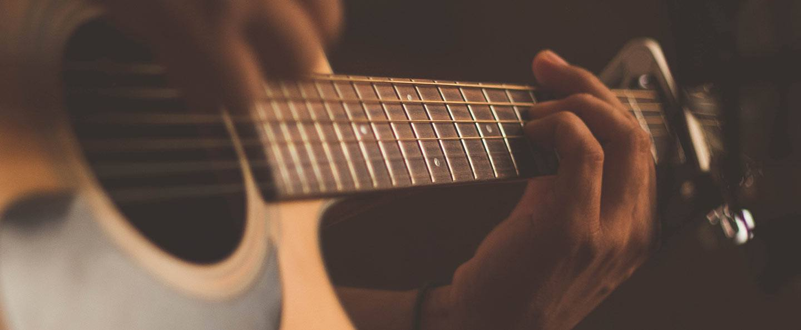

Gitara je jedan od najomiljenih instrumenata danas i gotovo je nemoguće čuti popularnu pjesmu bez njenog zvuka. No, koliko zapravo znate o njoj? Zato prošetajte stranicom i naučite nešto novo ili samo ponovite poznato. Svi ljubitelji gitare su dobrodošli!
